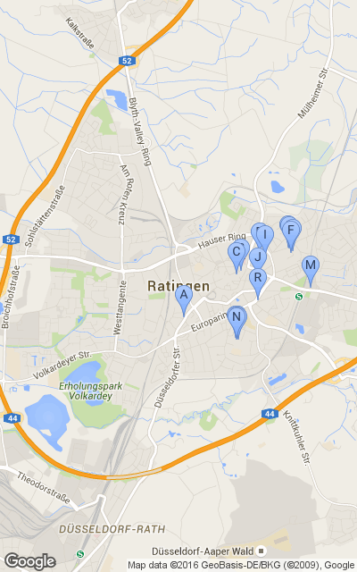

Alle
Angaben ohne Gewähr und Vollständigkeit. funkknecht@gmail.com V0.3
Diese Seite ist nur temprorär gespeichert und wird gelöscht werden !
Infos über Freifunk unter freifunk-rheinland.net
| # | Entfernung | Name | Strasse | PLZ Ort | Gateway | Navigation |
| A | 0 km | FF_Rtg_SPD_DdorferStr86 | Düsseldorfer Straße 86 | 40878 Ratingen | GOTO | |
| B | 0 km | Ratingen-neues-weinkaufen | Oberstraße 29 | 40878 Ratingen | GOTO | |
| C | 0 km | Ratingen-Obertor-Apotheke | Oberstraße 22-24 | 40878 Ratingen | GOTO | |
| D | 1 km | Ratingen-Hochstrasse31 | Hochstraße 31A | 40878 Ratingen | GOTO | |
| E | 1 km | Ratingen-Curry26 | Rosenstraße 26 | 40882 Ratingen | GOTO | |
| F | 1 km | Ratingen-PC-Hilfe | Reinaldstraße 6 | 40882 Ratingen | GOTO | |
| G | 1 km | Ratingen-NeuHausImmoKonzept | Rosenstraße 23 | 40882 Ratingen | GOTO | |
| H | 1 km | Ratingen-NUK-01 | Karl-Mücher-Weg 15 | 40878 Ratingen | GOTO | |
| I | 1 km | Ratingen-Hochstrasse31_v2 | Hochstraße 32 | 40878 Ratingen | GOTO | |
| J | 1 km | Ratingen-Beethoven | Beethovenstraße 17 | 40878 Ratingen | GOTO | |
| K | 1 km | Ratingen-NUK-Mensa-02 | Karl-Mücher-Weg 15 | 40878 Ratingen | GOTO | |
| L | 1 km | Ratingen-Reinaldstrasse-03 | Reinaldstraße 3 | 40882 Ratingen | GOTO | |
| M | 1 km | Ratingen-Homberger-11 | Homberger Straße 9 | 40882 Ratingen | GOTO | |
| N | 1 km | Ratingen-NUK-Hof-01 | Karl-Mücher-Weg 15 | 40878 Ratingen | GOTO | |
| O | 1 km | Ratingen-NUK-Mensa-01 | Karl-Mücher-Weg 15 | 40878 Ratingen | GOTO | |
| P | 1 km | Ratingen-NUK-Hof-02 | Karl-Mücher-Weg 15 | 40878 Ratingen | GOTO | |
| Q | 1 km | Ratingen-NUK-Base | Karl-Mücher-Weg 15 | 40878 Ratingen | GOTO | |
| R | 1 km | Ratingen-Physio-Praxis | Röntgenring 11 | 40878 Ratingen | GOTO | |
| S | 2 km | Ratingen-Kantstrasse | Kantstraße 9 | 40882 Ratingen | GOTO | |
| T | 3 km | Ratingen-Buergershof | Lintorfer Markt 24 | 40885 Ratingen | GOTO | |
|  | ||||||
|
|
Alle
Angaben ohne Gewähr und Vollständigkeit. funkknecht@gmail.com V0.3
Diese Seite ist nur temprorär gespeichert und wird gelöscht werden !
Infos über Freifunk unter freifunk-rheinland.net
|
|||||